虛假的古城
熱門的景點，公交車可以便宜抵達的，像是莫高窟、月牙泉這些地方，前兩天都已經逛完了。
其它地方的景點都離市區很遠，七十幾公里、一百多公里都有，公交車不能到的話，就要搭出租車，那價錢就是用喊價的。
今天的目標是距離市區十五公里遠的敦煌古城，說實話，我是被『古城』這兩個字所吸引的。
招待所的員工也不確定什麼車可以載我過去，建議我往西邊走到西大橋，那邊有公交車的總站，說不定有我需要的車。
拎著一籠小籠包當早餐，往西大橋散步過去，敦煌市區很小，但很熱鬧，敦煌郊區就很大，可是比較荒涼。
在公交總站那邊問了幾個司機，沒有直達古城的車，但是有經過的，回來的時候我就要在半路攔公交車才行。
聽起來問題不大，所以我就坐上開往『南湖』的車，車上已經有幾個乘客，可是沒有司機。
問了一下乘客這班車幾點開？
『下午三點。』
啥米？看看手錶，現在才早上九點半耶！下午三點才開車，你們這麼早坐在這裡幹嘛~_~

我沒可能等到下午三點那麼久，離開公交總站，散步在綜合批發市場，買點東西吃兼想到古城去的辦法。

在這邊買了一斤的綠色的葡萄乾，很好吃，沒有粉粉的感覺，就是整顆葡萄乾燥而成，另外還買了一斤的餡餅當備用糧食。

繞著市場走了一圈，來到一間小商店，買兩根冰棒順便問老闆有什麼車子可以載我去古城？
我非常感到疑問的是，為什麼會沒有車子到呢？難道古城不是個值得一去的景點嗎？
商店的老闆之前是開出租車的，因為賺不到錢，所以就不做了，如果我要去的話，他有朋友在開出租車，來回古城車資二十元。
雖然比公交車貴，但是搭出租車只要二十元，還算在可以接受的範圍之內，所以我就答應了。
坐在出租車內，翻閱著車上的三國語言景點介紹，中文、英文、日文。
中文所稱的『古城』，日文則稱為『影劇城』，為什麼翻譯差那麼多？
等我到了古城，花了三十元門票進去，才知道日文的介紹是比較誠實的。
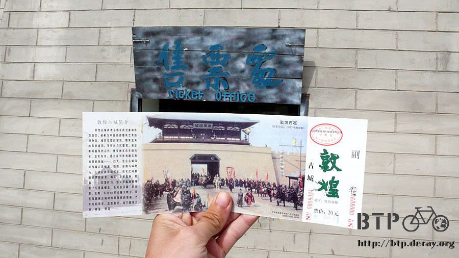
這裡跟古城一點關係也沒有，完全是現代人工的仿古建築。
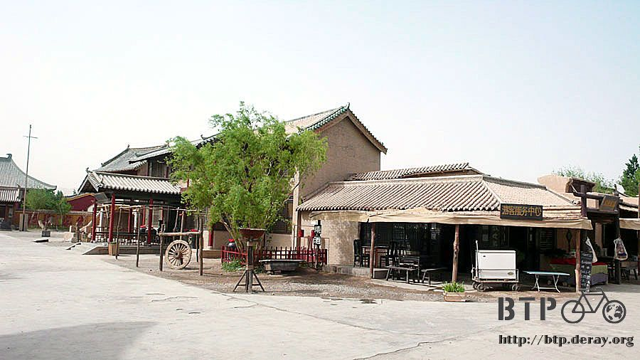
是當初日本人拍攝電影『敦煌』所建設的假古城，拍完電影之後本來要燒掉，但是被保留下來了。
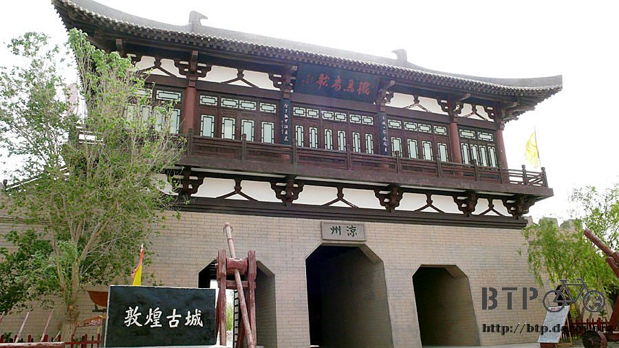
裡面所有看到的一切都是表面的虛假，沒有一個東西的歷史會讓人思古幽情。
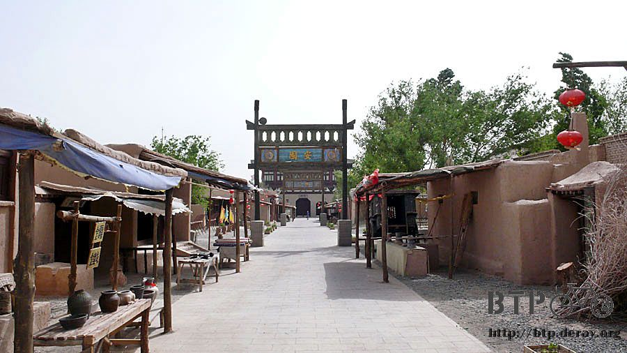
若這些照片讓你覺得這個地方有一遊的價值，那我只能說我照片拍的還真是有吸引力~_~

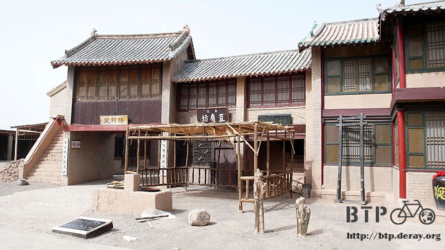

電視劇常出現的地牢，裡頭關著一隻小白兔=..=有什麼寓意嗎？


製作這些假東西的工坊也在古城裡面，裡頭滿地的木屑和未完成的東西。
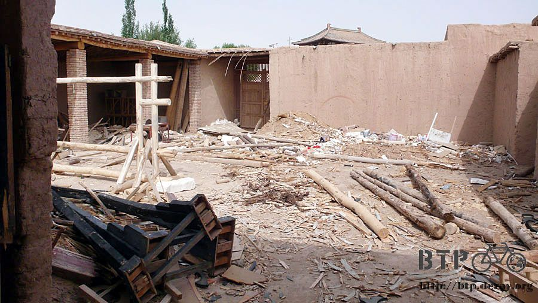
奇怪的牢房，人偶都是用稻草人紮的，穿上衣服就成了死囚。
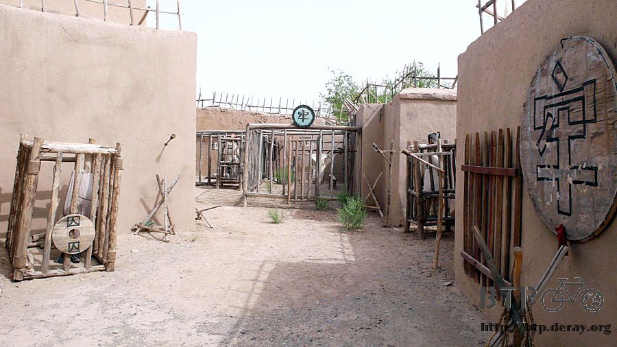

也有像是市集的地方，這裡會那麼沒意思，因為都沒有用心經營，稍微試想一下，
如果找一些人打扮成古代的裝扮，在這邊吆喝著販賣東西，就算是賣糖葫蘆好了，也很有味道呀！
再找幾個臨時演員穿古代的衣服在街上走來走去，營造出熱鬧的市集的感覺，這樣整體的感覺都會煥然一新吧。
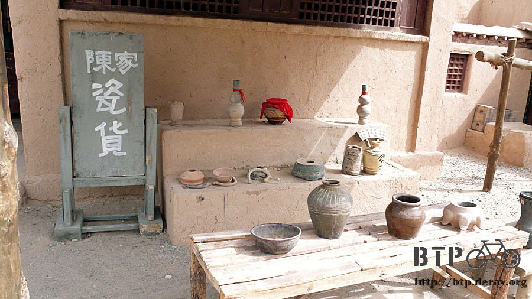
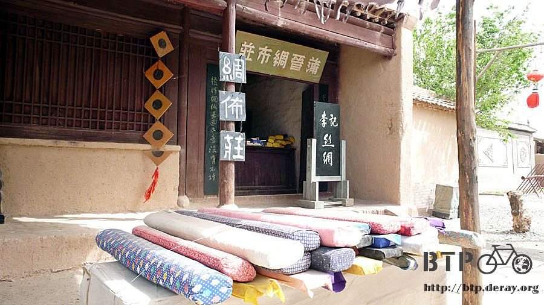
雖然外表的城牆看起來還蠻像一回事的，可是裡面完全是一個令人失望的景點。
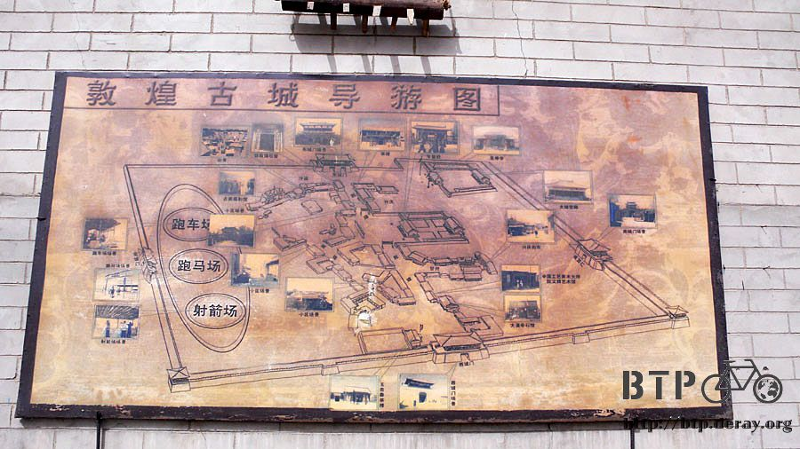

我只花了十五分鐘，在這邊繞了一圈，拍幾張照片，就請司機載我離開這裡，回市區前，順道去了有一千六百年歷史的白馬塔。

和其他以白馬為名的建築一樣，都是因為古代白馬拖運經書辛苦有功，所以建塔做紀念。

花了兩張門票，一張三十、一張十五，但總計讓我參觀的時間不超過半小時，花費在搭車的時間還比較長XD
回到招待所後，深沉的昏睡了四個小時的午覺，好久沒有這麼悠閒了，感覺很幸福。
下午四點半去參觀隔壁的敦煌博物館，早上已經失望兩次了，就算這次花的十五元又讓我失望，那也不算什麼。
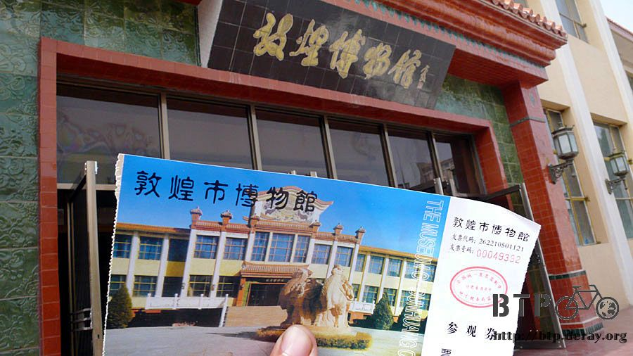
博物館展覽分六廳，三廳展示漢長城、墓穴掘出物和一些古代的東西。
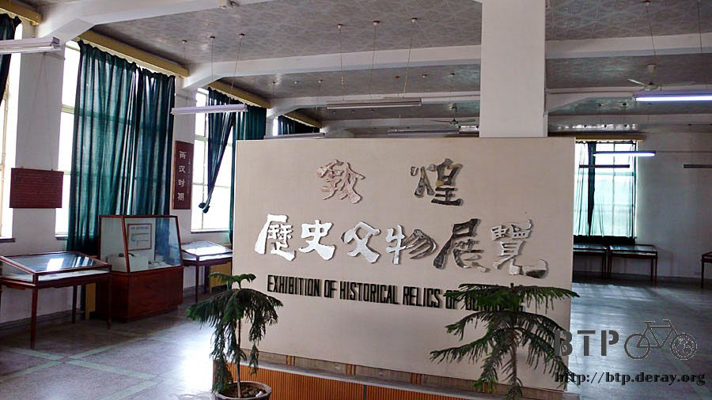
漢代修築的長城，如今依然保留著一小段的遺跡，如此簡單的架構居然能屹立千年不倒，蠻神奇的。
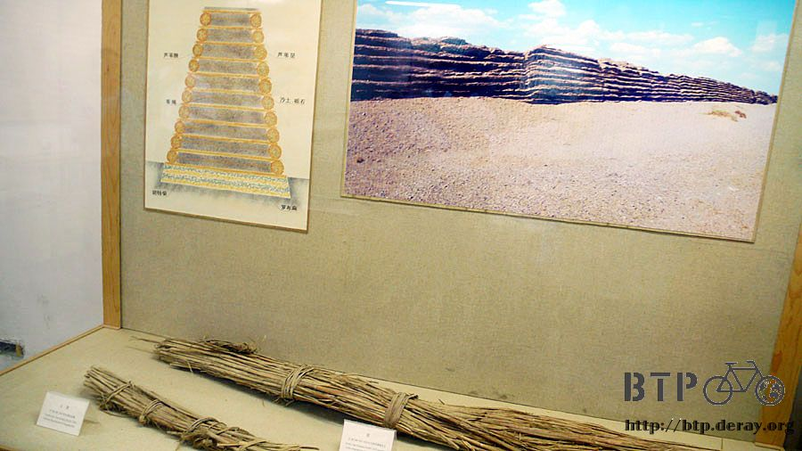
一千年歷史的筷子和湯匙，左上角那個比梳子還要細密的東西，是用來刷蝨子用的。
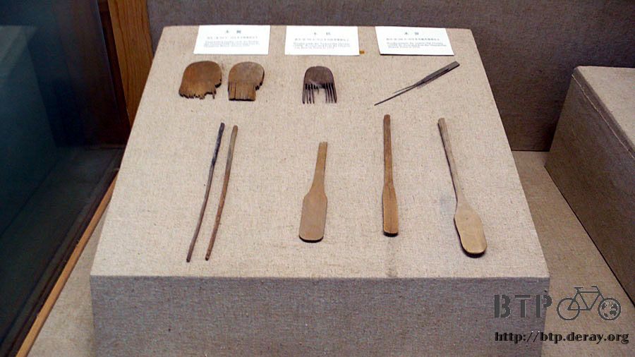
以前的聖旨，開頭第一句話真的是『奉天承運』呢～
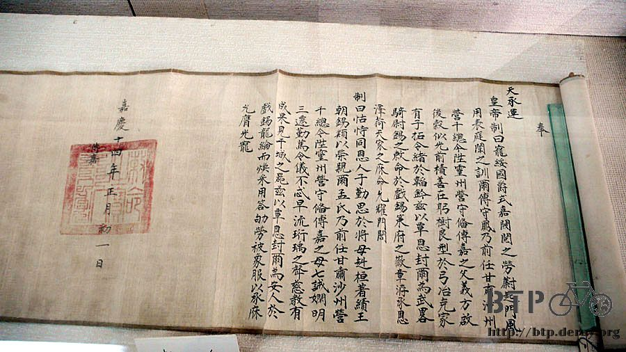
用梵文木刻版的經文印刷，旅行攜帶的行李中有一本書『百年孤寂』，裡面有一段是吉普賽人麥奎迪所留下的手稿，
必須經過一百年才能夠被邦迪亞家族的後代解讀出來，麥奎迪所用的文字就是梵文。

像蝌蚪般的文字，是以前古代的經文嗎？難怪會需要請高僧回來翻譯，不然這誰看的懂呀@@"

這是莫高窟藏經閣裡五萬多卷經書中少數被保留下來的殘破經文，珍貴的部分都已經在國外的博物館或是私人收藏家手裡了。
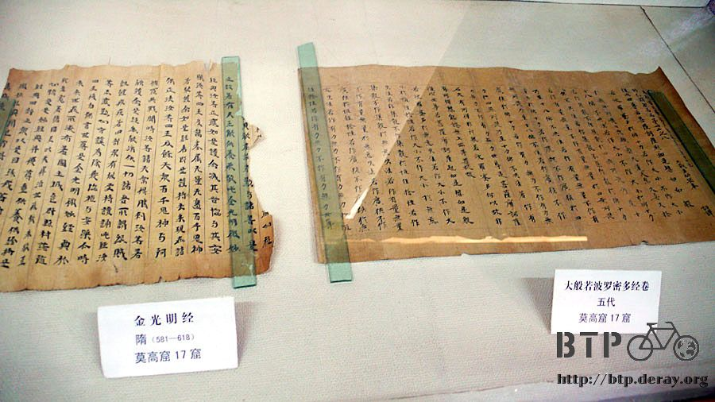
樣子很好笑的人偶陪葬品，這個姿勢有什麼意義嗎？

另外三廳則都是賣東西的，看看就算了。米莎莎，有賣妳喜歡的大象喔，但是很貴買不起。

十五元門票讓我在博物館裡消耗了一個多小時，終於算是值得參觀的地方。
晚餐在敦煌夜市裡吃烤羊排，今天搭出租車的時候，司機是敦煌人，我問他有什麼地方料理好吃的？
敦煌拉條子、驢肉黃麵、羊粉湯、炒羊雜、杏皮水這些都吃過了，還差烤羊排沒吃。

烤羊排一斤二十五元，一共有二十六串，肉質非常的鮮嫩，完全沒有一絲羊騷味以及腥味，超級好吃。
配著冰涼的啤酒真是人生的一大享受。
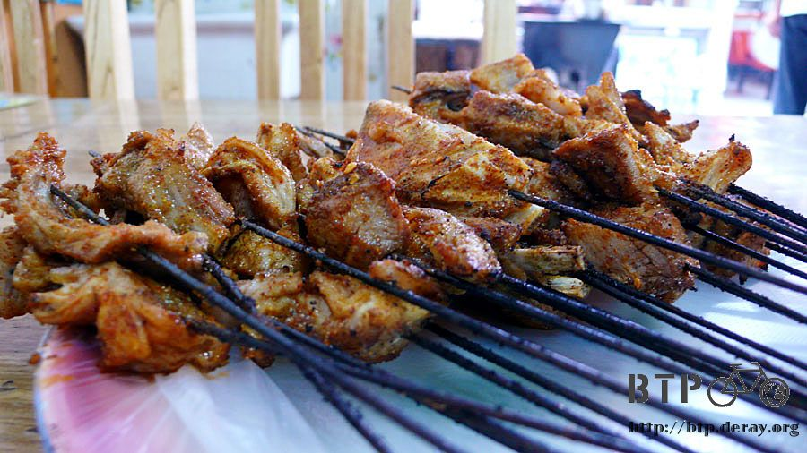
明天就要離開敦煌了，在這裡待了三天，體力充電恢復到120%，比剛從北京出發還有元氣，遙遙長路還在前頭等著我呢。
繼續閱讀：5.30 筆直的路
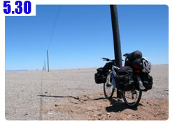
中國-人民幣－ 1：4.3 台幣
5.29 |
總計：153.7元 |
早餐小籠包4元、菜市場餡餅一斤4.2元、葡萄乾一斤6.5元、冰棒兩支1元、出租車20元、敦煌古城門票30元、白馬塔門票15元、住店30元、敦煌博物館門票15元、晚餐烤羊排一斤25元、黃河啤酒3元 |
|